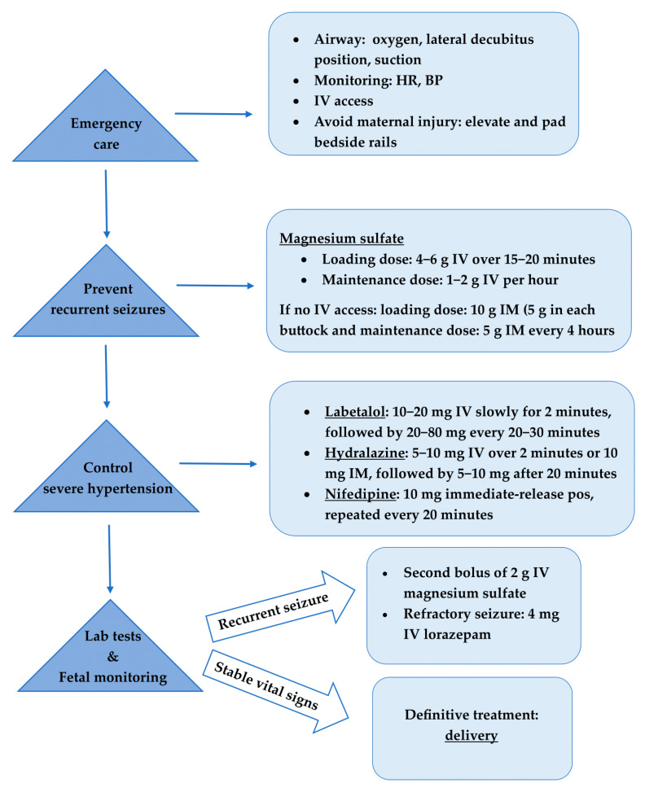

Exceções que matam gabarito
Neonatal · eclâmpsia · glicose · cocaína/intox — quando o 1º NÃO é benzo
1. Neonatal
No período neonatal, em crise, o primeiro medicamento não é o benzodiazepínico. Primeiro = fenobarbital.
2. Eclâmpsia
Na eclâmpsia em crise: o primeiro não é o benzodiazepínico. Primeiro = sulfato de magnésio (magnésio).
3. Hipoglicemia
Se for hipoglicemia: primeiro (e correção) = glicose. (Eco da porta da P4.)
4. Intoxicação / cocaína
Em intoxicação por cocaína, a fenitoína não resolve / "não é bacana". Se paciente com uso de cocaína não melhorou com benzo, não marcar fenitoína como segundo medicamento. De forma geral, nas intoxicações, a fenitoína não é muito boa — por causa do mecanismo de ação.
Cuidado com esses "detalhezinhos" de prova: neonatal · eclâmpsia · hipoglicemia · intoxicação/cocaína. Doses de fenobarbital e de MgSO₄ não vêm desta fonte — só o nome do 1º fármaco. Não inventar número.
👶 Neonatal
1ª escolha: Fenobarbital
Não marcar: Benzo como 1º
🤰 Eclâmpsia
1ª escolha: Sulfato de magnésio
Não marcar: Benzo como 1º
🩸 Hipoglicemia
1ª escolha: Glicose
Não marcar: AED antes da glicose
💊 Cocaína / intox
Não marcar: Fenitoína como 2º
se falhou benzo

- Marcar diazepam como 1º no RN
- Marcar benzo como 1º na eclâmpsia
- Marcar PHT no usuário de cocaína que não parou com benzo
Quatro "detalhezinhos" que viram gabarito.
Neonatal → fenobarbital. Eclâmpsia → MgSO₄. Hipoglicemia → glicose. Cocaína/intox → não marcar PHT como 2º se falhou benzo. Sem doses inventadas.